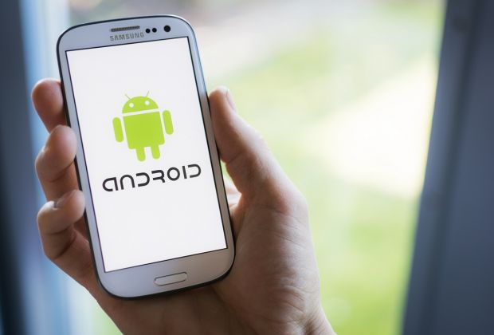

Samsung schimbare surprinzătoare ar putea renunța la Android
 În lumea telefoanelor mobile sunt două mari sisteme de operare: iOS și Android. Samsung este un mare reprezentant al taberei Android, dar asta s-ar putea schimba.
Samsung ar putea fi una dintre primele companii care să adopte sistemul de operare Fuchsia OS, un sistem open-source creat tot de Google. Gigantul american lucrează la Fuchsia OS din 2016.
Utilizatorul de Twitter Ice Universe, cunoscut pentru informațiile corecte pe care le are despre industrie, spune că este foarte posibil ca viitoarele dispozitive Samsung să treacă la Fuchsia OS. Dispozitivele pe care acest sistem va fi instalat nu au fost dezvăluite. În timp ce Android a fost creat pentru smartphone-uri și tablete, Fuchsia OS este destinat unei game largi de produse, cu accent pe dispozitivele interconectate.
De asemenea, nu are aceleași limitări ca Android. În plus, va putea fi mai ușor de actualizat decât Android, astfel încât clienții nu vor trebui să se bazeze pe producătorul de telefoane pentru a primi actualizări. Platforma ar fi concepută în jurul interacțiunilor vocale prin intermediul Asistentului Google. La sfârșitul anului trecut, Google a deschis Fuchsia pentru alți jucători, iar Samsung a devenit colaborator. Compania a adăugat până acum fragmente de cod legate de „Flash-Friendly File System”, adesea abreviat cu „F2FS”.
 Este un sistem de fișiere open-source proiectat de Samsung pentru arhitectura de stocare flash și se presupune că este mai rapid decât sistemul de fișiere ext4 utilizat de multe dispozitive Android.
Încă nu știm când va fi gata pentru lansare, dar există zvonuri care anunță un debut al Fuchsia OS mai târziu în acest an pe un smart screen Nest. Odată ce acest lucru se întâmplă, Samsung ar putea trece la utilizarea software-ului și pe dispozitivele smart home.
Este un sistem de fișiere open-source proiectat de Samsung pentru arhitectura de stocare flash și se presupune că este mai rapid decât sistemul de fișiere ext4 utilizat de multe dispozitive Android.
Încă nu știm când va fi gata pentru lansare, dar există zvonuri care anunță un debut al Fuchsia OS mai târziu în acest an pe un smart screen Nest. Odată ce acest lucru se întâmplă, Samsung ar putea trece la utilizarea software-ului și pe dispozitivele smart home.